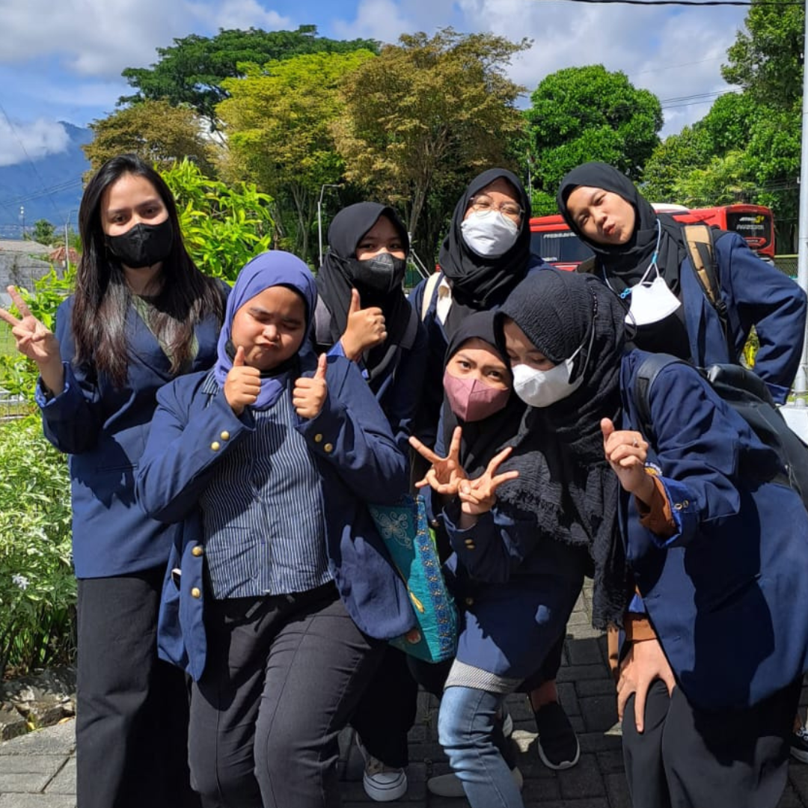
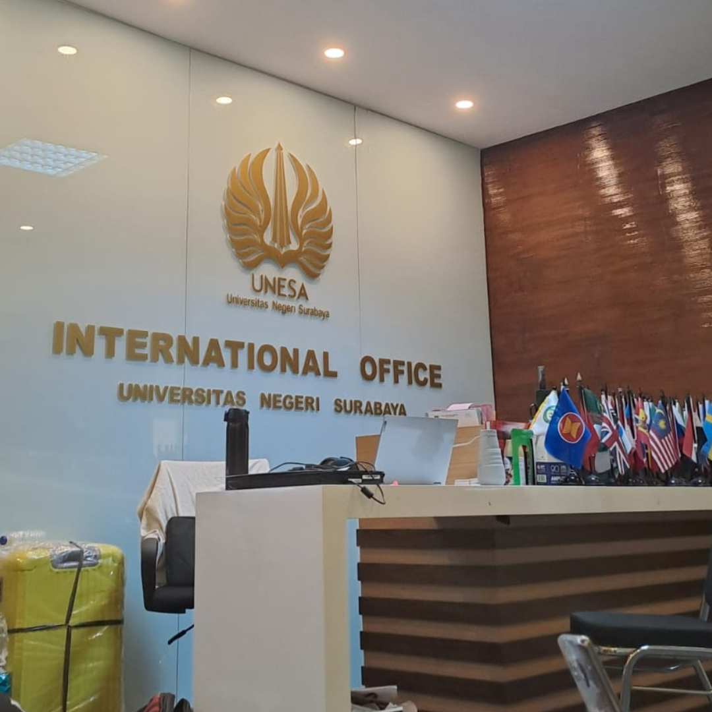
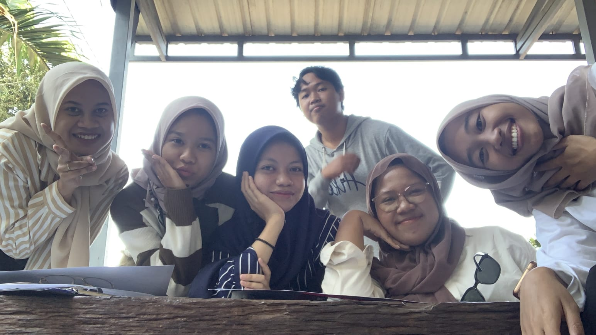

Hello Viona here, aku lagi belajar membuat website untuk mata kuliah Sistem Informasi Geografis
Mungkin website ini akan aku isi uni life at unesa, sebelumnya aku sedikit belajar bagaimana mencantumkan link jadi kalian bisa akses link prodiku dibawah ini
ini profile prodiku2022 menjadi tahun pertamaku menjadi mahasiswa dan sekaligus tahun tersibuk menurutku dikarenakan harus mengikuti serangkaian pkkmb,osjur,pra-Td. Maba era termasuk era dimana aku mengalami perubahan mbti yang dulunya introvert sekarang aku menjadi extrovert mungkin ini didukung dengan lingkungan teman temanku yang welcome dengan siapapun. Sebenernya di tahun itu juga aku merasa sangat beruntung karena setidaknya bisa membuktikan ke alm mama papa aku bisa kuliah :)
Diawal sebelum masuk semester 2 kita melakukan kunjungan ke BMKG Malang
Semester dua termasuk semester terseru karena di semester dua terdapat mata kuliah meterologi dimana kita harus menggambar manual dan revisi berkali kali namun alhamdulillah selesai dan terlewatkan nilainya juga mantab. Di semester ini aku belajar banyak termasuk nekat ikut lomba debat ya meskipun tidak juara tapi tidak salah juga ikut lomba untuk menambah sertifikat hehehe... di semester ini juga ternyata aku mulai akrab dengan mbak meitha yang dimana dia menjadi partner lomba debat yang saia ikuti. Namun dibalik keseruan semester dua ini aku mulai merasakan tugas individu lebih baik daripada tugas kelompok karena tugas kelompok lebih menyerap mental dan emosi :)
Karena libur semester genap lebih panjang dari libur semester ganjil dan saya merupakan orang asli Surabaya pastinya akan mengalami kegabutan yang sangat akut dikarenakan teman-teman sudah kembali ke kampung halaman, maka dari itu mengikuti kepanitiaan dari rektorat adalah salah satu kuntchie untuk menghilngkan kegabutan, ternyta setelah menjadi panitia banyak sekali teman-teman saya yang mengajak saya lomba sehingga libur semester saya tidak menjadi liburan :)
foto diatas merupakan foto dari kantor urusan internasional, yaaapp 3 bulan lamanya setiap hari selalu disini dan selalu pulang malam karena kali ini event festival internasional pertama kali yang diadakan oke kui sehingga butuh waktu lama untuk mengkonsepnya (wishlist tidak menggabut di libur semester tercapai)
Banyak yang bilang semester 3 termasuk semester ter wow dan ternyata benarrr sekaliiiii tapi over all semester 3 termasuk semester terseru karena pertama kali kita turun lapangan hehehe
Di semester tiga ini aku juga mulai paham dengan aplikasi QGIS yang berawal mula dari bapak PK Rosyid tidak bisa menutori sehingga harus belajar manual, eh keterusan... ternyata seseru itu
Foto diatas dokumentasi dari kelompok satu yang pertama kali lapangan, ternyata lapangn seru haha tapi part ter tidak seru adalah bertemu ular dijalan sampai hampir jatuh :' but is okeee bis dibuat cerita ke teman teman wkwk